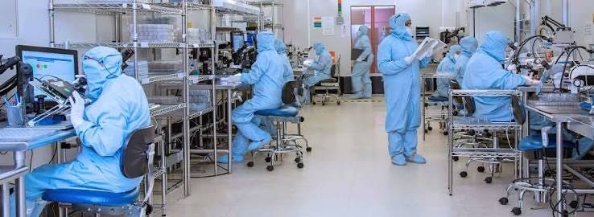
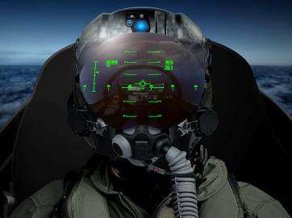
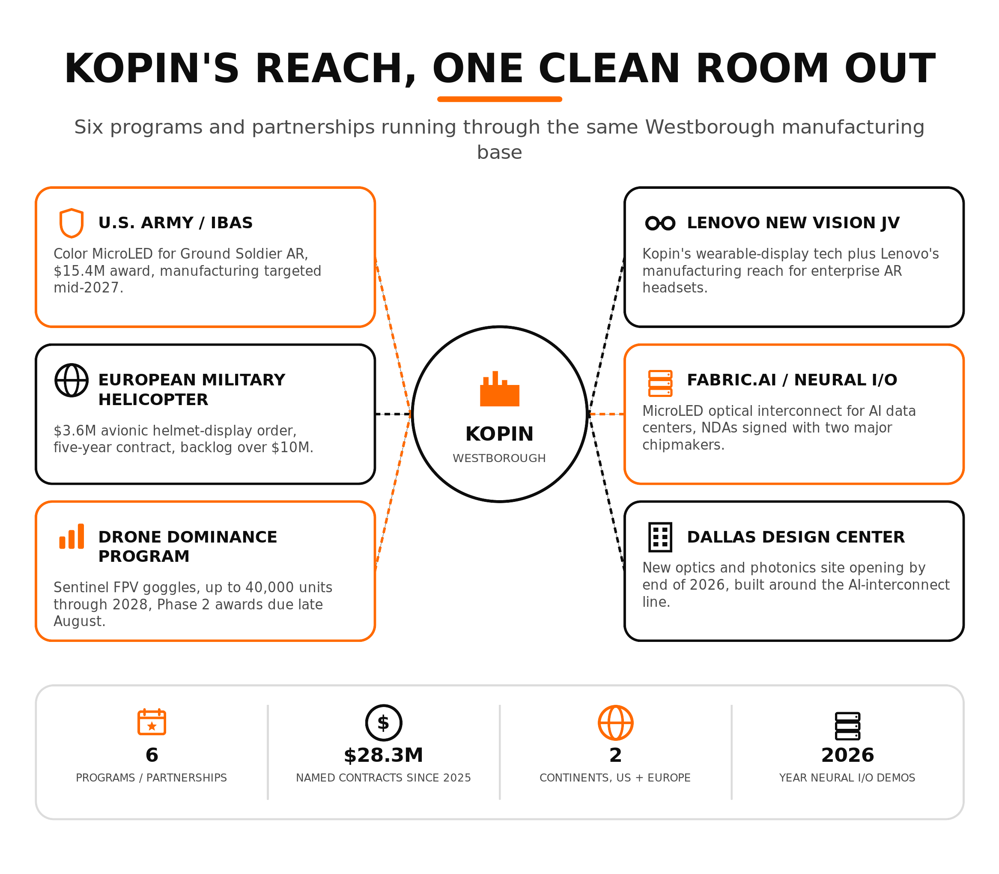

Kopin Corporation makes micro displays: the tiny, high-brightness screens that sit inside a rifle scope, a pilot’s helmet visor, or a drone pilot’s goggles. It has done this since 1990, largely as a components supplier nobody outside defense procurement circles had heard of. In 2026, three things are converging at once inside that Westborough facility: a shift from outsourced OLED production to in-house manufacturing, a run of Army MicroLED milestones tied to a $15.4 million award, and a new optical-interconnect partnership aimed at AI data centers. This is the KOPN stock story Wall Street is pricing today.
Inside the Class 10 Clean Room
Kopin’s headquarters at 125 North Drive in Westborough runs roughly 74,000 square feet and includes a Class 10 clean room, a facility standard clean enough to keep sub-micron particles out of the bonding and assembly process for military-grade optics. For years the company ran a fabless OLED model, designing displays but outsourcing deposition to Asian and European partners. In May 2026, Kopin announced the purchase of a full OLED Deposition System for the Westborough site, moving core OLED production in-house for the first time. CEO Michael Murray said the equipment “strengthens our ability to support urgent defense needs while improving our control over quality, lead times, and pricing,” and framed it as part of a broader push to control LCD, OLED, and MicroLED production domestically.
That push is funded in part by a $15.4 million Other Transaction Agreement awarded in September 2025 through the Army Contracting Command’s Industrial Base Analysis and Sustainment program, aimed at full-color MicroLED displays for ground-soldier augmented reality. On July 14, 2026, Kopin reported three milestones under that award: single-panel brightness above 150,000 nits, exceeding the program’s threshold; early integration progress toward the Army’s Soldier Borne Mission Command display; and delivery of new MicroLED bonding equipment, installed at Westborough by the end of July. Management expects to begin manufacturing under the program in mid-2027. Separately, Kopin announced plans in June 2026 to open a second U.S. site, an Optics and Photonics Design Center in Dallas, to house lab space and small-scale manufacturing for its newer interconnect and optical-subsystem lines before the end of the year.

The Defense Backbone Still Pays the Bills
Defense applications, principally thermal weapon sights, pilot helmet-mounted displays, and armored vehicle targeting systems, generated 74% of Kopin’s total revenue in fiscal 2025. In May 2026, Kopin won a $21.5 million follow-on production contract to build custom thermal-imaging eyepiece assemblies for a major U.S. defense prime, a deal the company says reinforces domestic supply chains for vision systems that once relied on foreign components. In February 2026, it landed a $3.6 million order for an advanced avionic helmet-mounted display system for an undisclosed European military helicopter platform, with deliveries under a five-year contract beginning this year and total backlog on that program topping $10 million.
Kopin is also using its optics base to enter the first-person-view drone market. In April 2026, the company won an initial $3.2 million contract for FPV optical modules under its new Sentinel FPV line, which pairs OLED microdisplays with what Kopin calls Dual Situational Awareness, letting an operator watch drone video feed without fully occluding their surroundings. The program carries potential delivery of up to 40,000 goggles through 2028. By late June, Kopin reported multiple new prototype orders from companies evaluating Sentinel FPV as part of their own drone offerings, describing the FPV segment as a rapidly expanding category tied to broader U.S. drone-dominance procurement plans.

AR, VR, and the AI Infrastructure Bet
Kopin’s optics business extends beyond soldiers and drone pilots. The company’s Lenovo New Vision joint venture with Lenovo combines Kopin’s wearable-display technology with Lenovo’s manufacturing and distribution reach to target the enterprise AR headset market, an application where lightweight, high-brightness microdisplays matter almost as much in a warehouse as on a battlefield.
The newer and larger swing is Neural I/o, a MicroLED-based optical interconnect developed jointly with Fabric.AI (Nasdaq: FABC) to move data between GPUs, accelerators, and memory in AI data centers using arrays of MicroLED emitters and photodetectors instead of traditional lasers. The collaboration, backed by an initial $15 million purchase order, appointed engineer Bill Maffucci in May 2026 to lead the chip program and disclosed signed NDAs with two major chipmakers. Fabric.AI shareholders ratified the partnership in June 2026, and Kopin expects a demonstrable prototype by the end of 2026. If it works, Kopin is applying the same display physics it uses in a rifle sight to a data-center power and bandwidth problem, a genuine test of whether its clean-room manufacturing base can serve a market far larger than defense optics.
What’s Moved Since Mid-July
Three things have come into focus in the two weeks since Kopin’s July 14 MicroLED milestone announcement. First, the Drone Dominance Program has a next gate on the calendar. Kopin’s June 29 announcement of multiple Sentinel FPV prototype orders came with a specific timeline: volume orders depend on DDP Phase 2 evaluations and awards, expected in late August, with customers requiring immediate delivery once awards go out. This puts a hard date on whether the FPV prototype pipeline converts into production revenue this year or slips into 2027.
Second, Kopin confirmed its next earnings date. The company will report second-quarter 2026 results on August 11, a date that now sits closer on the calendar than the DDP Phase 2 decision. That call will show whether the $52-60 million full-year guidance still tracks after a first quarter that leaned on $3.4 million of grant income to produce a rare quarterly profit.
On the AI-interconnect side, the timeline hasn’t moved: Fabric.AI still targets a demonstrable Neural I/o prototype by the end of 2026, and the company told investors to expect a progress update within the current quarter. Kopin also used its June 23 Dallas announcement and a May Planet MicroCap presentation to sketch a broader pitch: modular product lines, NATO-adjacent international expansion, and a manufacturing base built to serve both a rifle scope and a data center rack. None of that is new revenue yet but it is a roadmap that needs the August 11 earnings call and the late-August DDP Phase 2 decision to hold up.
What Wall Street Sees
Coverage on KOPN stock has expanded fast in 2026, and it is uniformly bullish. Craig-Hallum’s Christian Schwab raised his price target to $10 from $6 in May, keeping a Buy rating and citing proposed congressional drone budgets that could run to three million units between 2027 and 2028. Lake Street raised its target to $7 from $5 the same month. Stifel moved to $6.50 from $5.50. Canaccord Genuity’s Austin Moeller raised his target to $6.25 from $5.50 in May, pointing to Kopin’s reiterated $56 million guidance midpoint and the Sentinel FPV headset opportunity. Lucid Capital initiated coverage with a Buy and a $10 target. Across six analysts, the consensus rating is Strong Buy with an average price target of $7.63, more than double the current share price.
The valuation math is unusual for a company this size. Kopin posted a rare quarterly profit in its most recent trailing period, $1.93 million in net income on an EPS of $0.01, but that figure leans on grant income and collaboration revenue rather than product margin: Q1 2026 alone included $3.4 million of grant income against $5.4 million of net product revenue. A $663 million market cap against $39.3 million in trailing sales and a P/E ratio above 500 only makes sense if the $52-60 million 2026 guidance holds and the backlog, roughly $37 million at the end of 2025 by management’s own account, keeps converting into shipped product. The August 11 earnings call is the next real test of that math and we at the Zero Hour Group remain bullish on leadership execution in a growing space.
What to Watch
Customer concentration. One customer accounted for 63% of Kopin’s revenue in fiscal 2025, and defense programs overall made up 74%. A delay, recompete, or budget cut on that single relationship would hit the top line harder than the diversified order list of recent press releases suggests.
Cash and dilution. Kopin carries an accumulated deficit of $399.5 million and has funded itself in recent years through equity raises priced as low as $0.65 and $2.10 per share. The July 17 S-3/A doesn’t raise new capital, it registers resale of roughly 15.8 million existing shares from a September 2025 PIPE, but that overhang has been a drag on the stock since the registration took effect June 1. As of the Q1 2026 report, Kopin had $34.1 million in cash against a stated runway through at least the second quarter of 2027. Any shortfall in defense order timing or AI-interconnect funding raises the odds of another raise.
Two near-term dates. The August 11 earnings call will show whether Q2 revenue and the $52-60 million full-year guidance are still tracking. The DDP Phase 2 evaluations expected in late August will determine whether Sentinel FPV moves from prototype orders to the volume production Kopin needs to hit that guidance.
Kopin’s clean room, Army milestones, and its order backlog are all building out according to plan at this moment. Whether that adds up to $52 million in 2026 revenue, let alone the growth rate that justifies a Strong Buy consensus and a share price nearly double today’s, depends on execution the company has only begun to demonstrate at scale.
Sources
Kopin (KOPN) Stock Forecast & Analyst Price Targets - StockAnalysis.com
Kopin Corporation Reports First Quarter 2026 Financial Results - Kopin
Kopin Expands US OLED Microdisplay Production to Meet Defense Demand - The Defense Post
Kopin Wins $21.5M US Contract for Thermal Weapon Sight Systems - The Defense Post
Lenovo and Kopin Form Joint Venture to Grow Enterprise AR Headset Market - Road to VR
Kopin (KOPN) 2025 10-K shows revenue decline, cash raise and control issues - StockTitan
Kopin price target raised to $10 from $6 at Craig-Hallum - TipRanks
Kopin price target raised to $6.25 from $5.50 at Canaccord - TipRanks
Kopin sees cash runway through at least end of 2Q27 - TipRanks
Kopin registers 15.8M resale shares on Form S-3 - StockTitan
Kopin (NASDAQ:KOPN) Trading Up 7.7% - Here’s What Happened - MarketBeat